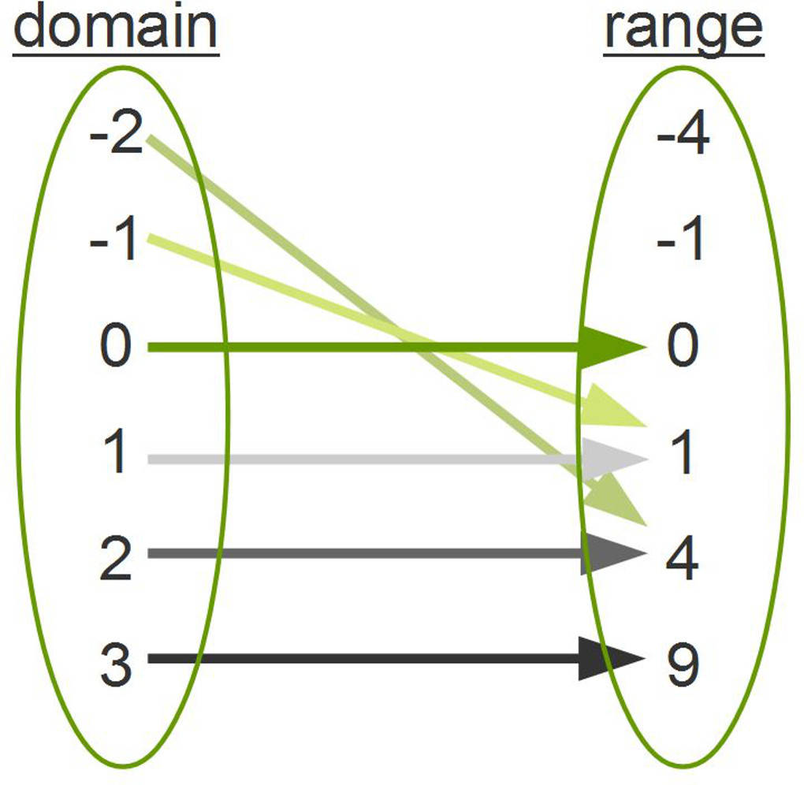

To navigate: left arrow - previous slide, right arrow - next slide, escape - toggle slide show mode.
Functional programming seems like a fad these days, many languagues are adding features from category theory and other erudite traditions, even Java has added lambda's, streams and optionals. But these ideas are neither new nor a fad, and many of them had seeds in Java from the beginning.
Description"We were not out to win over the Lisp programmers; we were after the C++ programmers. We managed to drag a lot of them about halfway to Lisp." - Guy Steele, co-author of the Java specification. In this talk, we will explore how functional styles can be applied to Java to create better object oriented designs, and how recent additions to Java expedite these patterns. In addition we will look at other JVM languages that have more direct roots in the lambda calculus with better support for algebraic and categorical design patterns. We will also discuss how these functional styles can enhance correctness with tools such as monoids, phantom types, trampolines, and algebraic data types and how to represent these constructs in Java.
A function is a relation that uniquely associates members of one set with members of another set. More formally, a function from
Function definition from WolframAtoBis an objectfsuch that everyainAis uniquely associated with an objectf(a)inB.
An alternative functional style of programming is founded on the use of combining forms for creating programs. Functional programs deal with structured data, are often nonrepetitive and nonrecursive, are hierarchically constructed, do not name their arguments, and do not require the complex machinery of procedure declarations to become generally applicable. Combining forms can use high level programs to build still higher level ones in a style not possible in conventional languages.
Associated with the functional style of programming is an algebra of programs whose variables range over programs and whose operations are combining forms. This algebra can be used to transform programs and to solve equations whose "unknowns" are programs in much the same way one transforms equations in high school algebra. These transformations are given by algebraic laws and are carried out in the same language in which programs are written. Combining forms are chosen not only for their programming power but also for the power of their associated algebraic laws. General theorems of the algebra give the detailed behavior and termination conditions for large classes of programs.
John Backus, 1977
Functional Programming is a school of research that studies what is computable, how to express those computations(the theory of programming languages) and reasoning about combinations of computations using mathematics, in particular Abstract Algebra, Category Theory, Constructivist (Intuitionistic) Mathematics, and the Lambda Calculus.
A function is a relation that uniquely associates members of one set with members of another set. [...]
java.util.Map instances, or any other "key/value" dictionary.public interface Function {
public Object apply(Object value);
}
public class Compose implements Function {
private Function f,g;
public Compose(Function f, Function g) {
this.f = f;
this.g = g;
}
public Object apply(Object value) {
return g.apply(f.apply(value));
}
}
public class IsEven implements Function {
public Object apply(Object value) {
if (((((Integer) value).intValue()) % 2) == 0) {
return Boolean.TRUE;
} else {
return Boolean.FALSE;
}
}
}Function addOne = new Function() {
public Object apply(Object value) {
return new Integer((((Integer) value).intValue()) + 1);
}
};Excerpt from an email by Anton van Straaten to Guy Steele on the Lightweight Languages mailing list, June, 2003. - https://people.csail.mit.edu/gregs/ll1-discuss-archive-html/msg03277.htmlThe venerable master Qc Na was walking with his student, Anton. Hoping to prompt the master into a discussion, Anton said "Master, I have heard that objects are a very good thing - is this true?" Qc Na looked pityingly at his student and replied, "Foolish pupil - objects are merely a poor man's closures."
Chastised, Anton took his leave from his master and returned to his cell, intent on studying closures. He carefully read the entire "Lambda: The Ultimate..." series of papers and its cousins, and implemented a small Scheme interpreter with a closure-based object system. He learned much, and looked forward to informing his master of his progress.
On his next walk with Qc Na, Anton attempted to impress his master by saying "Master, I have diligently studied the matter, and now understand that objects are truly a poor man's closures." Qc Na responded by hitting Anton with his stick, saying "When will you learn? Closures are a poor man's object." At that moment, Anton became enlightened.
public interface Function<A,B> {
public B apply(A value);
}
public class Compose<A,B,C> implements Function<A,C> {
private Function<A,B> f;
private Function<B,C> g;
public Compose(Function<A,B> f, Function<B,C> g) {
this.f = f;
this.g = g;
}
public C apply(A value) {
return g.apply(f.apply(value));
}
}
public class IsEven implements Function<Integer,Boolean> {
public Boolean apply(Integer value) {
if (((value.intValue()) % 2) == 0) {
return true
} else {
return false;
}
}
}Function<Integer,Integer> addOne = new Function<Integer, Integer>() {
public Integer apply(Integer value) {
return value.intValue() + 1;
}
};public interface Function<A,B> {
public B apply(A value);
}
public class Compose<A,B,C> implements Function<A,C> {
private Function<A,B> f;
private Function<B,C> g;
public Compose(Function<A,B> f, Function<B,C> g) {
this.f = f;
this.g = g;
}
public C apply(A value) {
return g.apply(f.apply(value));
}
}
public class IsEven implements Function<Integer,Boolean> {
public Boolean apply(Integer value) {
if (((value.intValue()) % 2) == 0) {
return true
} else {
return false;
}
}
}Function<Integer,Integer> addOne = value -> value.intValue() + 1;Excerpt from an email by Guy Steele on the Lightweight Languages mailing list, August, 2003. - http://people.csail.mit.edu/gregs/ll1-discuss-archive-html/msg04045.htmlThere is another point. Java had a number of other glaring faults and omissions in 1995, and we fixed those before releasing it in 1996. (Because we fixed them, you may never have known what we fixed.) And we had finite resources, facing an apparently finite window or opportunity. We had to make hard choices about what to fix before releasing it. Method call overload resolution was a mess; we fixed it. Generic types were debated, but didn't make it in. Unicode support was added; tail calls were not. And so on.
And you're right: we were not out to win over the Lisp programmers; we were after the C++ programmers. We managed to drag a lot of them about halfway to Lisp. Aren't you happy?
"Yup. So we stopped selling those schematics and started selling hammer-factory-building factories. Each hammer factory factory is built for you by the top experts in the hammer factory factory business, so you don't need to worry about all the details that go into building a factory. Yet you still get all the benefits of having your own customized hammer factory, churning out your own customized hammers, according to your own specific hammer designs."
Excerpt from the forum post Why I Hate Frameworks, September 2005
Suppose we have a constructor C(x) and code that creates objects by calling it. What happens if we find that we actually need to return an instance of a class other than C? For example, we might want to lazily load data from secondary storage, and need to return some sort of placeholder object that behaves just like a C, but isn't? What if we want to avoid reallocating a fresh object, and use a cached one instead?
So it's clear that you don't want to publicize your constructors to the clients of your API, as all they can do is tie you down.
The standard recommended solution is to use a static factory. This however, does nothing to help the other victims of constructors - their callers. As a consumer of an API, you don't want to use constructors: they induce a tight coupling between your code and specific implementations. You can't abstract over static methods, just as you can't abstract over constructors. In both cases, there is no object that is the target of the operation and a conventional interface declaration cannot describe it. The absence of an object means that constructors don't have the benefits objects bring - dynamic binding of method calls chief among these. Which is why constructors and static methods don't work well, and incidentally, aren't object oriented.
Excerpt from Constructors Considered Harmful, by Gilad Bracha, June, 2007.
public class Addition {
private int x, y;
public Addition(int x, int y) {
this.x = x;
this.y = y;
}
public int add() { return x + y; }
}
public class AdditionFactory {
private int x;
public AdditionFactory(int x) { this.x = x; }
public Addition getAddition(int y) { return new Addition(x,y); }
}
public class AdditionFactoryFactory {
public AdditionFactory getAdditionFactory(int x) { return new AdditionFactory(x); }
}
public class AdditionFactoryFactoryFactory {
public static AdditionFactoryFactory getAdditionFactoryFactory() {
return new AdditionFactoryFactory();
}
}System.out.println(AdditionFactoryFactoryFactory
.getAdditionFactoryFactory()
.getAdditionFactory(1);
.getAddition(2)
.add());
final Function<Integer, Function<Integer, Integer>> additionFactoryFactory = x -> y -> x + y;
System.out.println(additionFactoryFactory
.apply(1)
.apply(2));
public String normalizeText(String text, boolean upperCase, boolean echo) {
String newText = text;
if(upperCase) {
newText = newText.toUpperCase();
} else {
newText = newText.toLowerCase();
}
if(echo) {
System.out.println(newText);
}
return newText;
}
import java.util.function.Function;
import java.util.function.Consumer;
public String normalizeText(String text, Function<String, String> changeCase, Consumer<String> logger) {
String newText = changeCase.apply(text);
logger.accept(newText);
return newText;
}
// ...
normalizeText(str -> str.toUpperCase(), str -> System.out.println(str));try (InputStream in = java.nio.files.Files.newInputStream(file)) {
// Read the file.
}
// in.close() automatically called when we exit the block, even via throwing an exception.
java.io.Closeable interface.public <R> R tryWithResources(Supplier<Closeable> open, Function<Closeable, R> work) {
Closeable resource = null;
try {
resource = open.get();
return work.apply(resource);
} finally {
if(resource != null) { resource.close(); }
}
}public <R> R tryTransaction(Connection conn, Function<Connection,R> query) throws SQLException {
try {
conn.setAutoCommit(false);
return query.apply(conn);
} catch (final Exception e) {
conn.rollback();
} finally {
conn.setAutoCommit(true);
}
}+ that operates on a type of value.(a + b) + c must be equal to a + (b + c).0.0 + a = a and a + 0 = a.min(a,b) function on the integers, with positive infinity as the identity (or Integer.MAX_VALUE).""(the empty string) as the identity.f ∘ g = f(g(x)) with the identity function: id(x) = x as the identity.public class Compose<A,B,C> implements Function<A,C> {
private Function<A,B> f;
private Function<B,C> g;
public Compose(Function<A,B> f, Function<B,C> g) {
this.f = f;
this.g = g;
}
public C apply(A value) {
return g.apply(f.apply(value));
}
}
public class Identity<A> implements Function<A,A> {
public A apply(A value) { return value; }
}public class MapList<A,B> implements Iterator<B> {
private Function <A,B> f;
private Iterator<A> list;
public MapList(Function <A,B> f, Iterator<A> list) {
this.f = f;
this.list = list;
}
public boolean hasNext() { return list.hasNext(); }
public B next() { return f.apply(list.next()); }
}Iterator<A> list = someList;
Iterator<B> intermediateList = new MapList<>(functionAtoB, list);
Iterator<C> finalList = new MapList<>(functionBtoC, intermediateList);
Iterator<C> finalList = new MapList<>(new Compose<>(functionAtoB, functionBtoC), list);
import java.util.stream.StreamSupport;
// ...
Iterable<A> list = someList;
Iterator<C> finalList = StreamSupport.stream(list.spliterator(), false)
.map(functionAtoB)
.map(functionBtoC)
.iterator();